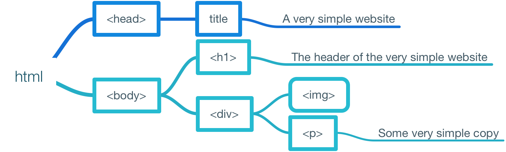

My Notes
Hey there, and welcome to my website.
This documents wraps up my insights and learnings from the udacity nanodegree
Intro to Programming.
I've chosen a systematic approach to structuring the knowledge I've acquired during the course.
As you can see in the table of contents, every chapter consists of the same subsections:
Introduction, Concepts, Tips, and More:
- Introduction will tell you what the chapter is all about.
- Concepts will introduce you to the fundamental concepts of the subject. Understanding these concepts is vital to understanding the subject as a whole.
- Tips will provide you with easy to understand and memorize insights that will help you to avoid the most common mistakes.
- More will provide you with a selection of links to useful ressources like apps and further reading – or videos that dive deeper into the matter.
These are the topics you are going to find in the document. You can click on the links to jump directly to the section you're interested in:
Hat Tip: This ToC is based on a post by Chris Coyer. You can find the article here.
Make a Webpage
This chapter will introduce you to the basics of making a webpage.
Basics of the Web and HTML
Introduction
The World Wide Web is a huge network of computers, that people use to access vast amounts of informantion. When somebody wants to access a document, he usually uses a browser to request the desired information from a server. After having downloaded the document from the server, the browser will render the contents of said document.
Concepts
1. HTTP
When browsers communicate with servers, they use a protocoll called HTTP. HTTP is an acronym for Hyper Text Transfer Protocol.
2. HTML
The web consist of documents written in a language called HTML. HTML is an acronym for Hyper Text Markup Language. The code of an HTML document determines what a user will see (content), and how he will see it (markup).
2.1. Elements
The contents of an HTML document are being marked up using tags and attributes.
Tags and attributes and the contents they refer to are called elements.
e.g. <tag>content</tag>.
2.2. Tags
Tags are being used to tag elements as such. There are two different kinds of tags: regular tags and void tags.
-
Regular tags. They require an open tag and a closing tag.
Examples of tags are the bold, or emphasis tag.
-
Void tags do not require a closing tag.
Examples of void tags is the line break.
2.3. Attributes
Attributes are used to provide additional information about HTML elements. Two examples:
-
The image tag,
a void tag, provides the source of an image and a description that is being
rendered if the image cannot be displayed.
Exaple:<img src="https://pbs.twimg.com/media/CNzpXIUXAAAXSKn.jpg:large" alt=" A screenshot I tweeted, of Siri giving me a hint."> - The anchor tag, a regular tag, that's being used to link HTML documents.
3. Stupid Computers
Always remember: Computers are stupd – they always interpret your instructions literally. Therefore a typo in your code will break your document or program.
Tips
Mind the Closing Tag
Keep in mind: if you forget the closing tag, a browser won't be able to display your content correctly.
Inline vs. Block
Block elements, such as <p></p>,
<div></div>, or <form></form>
create a invisible box around the content within them; inline elements don't.
Learn more about block elements here.
More
1. Tools
There are some helpful tools for you to learn coding HTML: Codepen, Scratchpad, and Sublime Text. Depending on the task at hand you will use one of these. Here's what you are going to use them for.
1.1. Scratchpad
Functionality
Scratchpad is an instant HTML and CSS editor created by
@nbashaw.
It provides you with an easy way to write HTML and CSS and is fairly easy to understand.
Speed
It will render the code you enter in the left pane in real time in the right pane.
Therefore you see immediately how changes to the code affect the style and structure
of your webpage.
Shareability
It is relatively easy to share the code you've created. However it does not match
codepen's focus on shareability.
Power
Scratchpad is a comparably lean and fast tool. It therefore lacks the functionality
of a powerful editor like Sublime Text.
You can find Scratchpad here.
1.2. Codepen
Functionality
Codepen, just like Scratchpad, is an instant editor. It is a bit more powerful and
has a strong focus on sharing and collaborating on code. It has been founded by:
Speed
Just like Scratchpad Codepen will render your code in real time.
Shareability
Codepen is the perfect tool to conveniently share your code with the world.
Power Codepen is more powerful than Scratchpad. It is easier to edit CSS, and you can even add Javascript to your code.
You can find Codepen here.
1.3. Sublime Text
Functionality
Sublime Text is way more powerful than Codepen or Scratchpad, and also more
complicated for beginners to understand. It doesn't run in a browser, but
as a stand alone application on your computer.
Speed
Sublime Text doesnt offer real time rendering of HTML and CSS as Codepen and
Scratchpad do. One way to see your code in action is to open the respective
HTML file in a browser. (Keep in mind that you need to keep accompanying
CSS and JS files in the same folder as the HTML files for the page to render
correctly.)
Shareability
It's a bit more complicated to share your code with Sublime Text, as it
doesn't run in the cloud, but on your machine. So if you wanna share your
code with the world you will need to upload it to the web first.
Power Besides HTML, Java Script and CSS you can use it to write software in powerful programming languages like Python, Ruby, C++ and the likes. It offers powerful features that make the life of a programmer easier. Examples: Auto-complete, or advanced and customizable syntax highlighting.
You can get Sublime Text 3 (which is currently in Beta) or free here. If you intend using it for an extended period of time, consieder supporting the developers by buying a license.
2. Reading
Check out these resources to learn more about the topics covered so far:
- Block Elements (w3schools.com)
- Links (w3schools.com)
- Tags (w3schools.com)
- HTML (en.wikipedia)
- HTTP (en.wikipedia)
Add Style and Structure to your Webpage
Introduction
In this chapter you will learn how you can use HTML to add structure and CSS to add style to your Webpage. You will learn how to avoid repetition in your code and why order matters.
Concepts
1. DOM
DOM stands for Document Object Model. The DOM is a programming interface
for HTML (and XML) documents. The programming interface provides a nested structure
of a document's content. In the case of html, all html elements are represented as
objects.
The DOM has a branching or «tree like» structure. It consists of one single,
well defined root and branches.
Whenever a browser loads an html document it creates a DOM of the document.
Based on the DOM other programs, like scripts, access, modify and, delete the
document's objects and their attributes if needed.
Every HTML document has the exact same basic structure:
-
The
<!DOCTYPE html>declaration, defining the document type to be HTML.
-
The
<html>-tag, enclosing the code that describes the HTML document.
-
The
<head>-tag enclosing information about the document.
-
The
<body>-tag, enclosing the code that describes the visible parts of the document.
This is a sample code for a very simple webpage:
<html> <head> <title>A very simple website</title> </head> <body> <h1>The header of the very simple website</h1> <div> <img src="151121_udacity_notes_simple_dom_structure.png" alt="tree diagram of a basic webpage"> <p> Some very simple copy </p> </div> </body> </html>
And this is the visual representation of the nested structure of this very simple
webpage:

2. CSS
The look of a web page is determined by a CSS file. CSS is an abbreviation for Cascading Style Sheets. It allows you to define the style of elements in your HTML-document.
To understand how CSS works, you need to understand the following concepts:
- Rule: You can use rules to describes the value, that a certain attribute should take.
-
Class: A
<class>refers to a group of elements that can be styled together. (Class names must never contain punctuation!) -
ID: An
<id>is a unique identifier for an element in an HTML document. -
Selector: You can use selectors (a string) to identify or target
the elements that are assigned to a
<class>or<id>attribute in a HTML document. -
Class selectors: You can use class selectors to apply style to
certain elements, for example
<h1>-headings. -
Declaration: The line of code that sets
<background-color: black>;, is a declaration;<background-color>is a property, and<black>is the value of said property. -
Cascading: Cascading (or inheritance) means, that rules apply
not only to the specified element, but also to its child elements. If a child
element has multiple overlapping rules, the more specific rule takes effect.
Inheritance allows you to write less code, thus save bandwith which translates
into a webpage that loads faster.
Keep in mind: inheritance applies to text-related elements, NOT box elements.
There are three different ways to apply css style to elements in your HTML document:
- You can define the style inline with your HTML code. This is prone to mistakes and generates a lot of repetitive code – in other words: it's a very bad way to style your document.
-
You can define the styles in the
<head>section of your document. This works fine for small websites. -
The proper way to apply style to your document is by creating a dedicated
CSS file. If you do this, you need to place a link in the
<head>section of your document.
The really cool thing abour CSS is: you can define the style of all instances of
a particular element. For example, instead of having to style each and every instance
of an <h1>-element, you can define a style that applies to all
<h1>-elements. In other words, CSS allows you to
avoid repetition.
3. Boxes Everywhere
Everything on the web is wrapped in a box. When you structure a webpage, you essentially think about how an where on a given grid you want to place your boxes.
When you look at a simple webpage and want to figure out its structure, it's best to do a screenshot start of it and then draw boxes around the various elements. Start with the biggest boxes and progress to the smaller ones. You can find an example here.
If you want to create a box, you can use block elements, like the
<div>-tag. After having created the structure of your document,
you can attribute style to your boxes. You can do this by adding attributes to
your tags or by seting up a CSS file, that defines the style of your various boxes.
Boxes consist of four different areas:
- Content: This contains the image or text that is appearing on the website. It sits at the center of the box and you can think of the other areas as the content's protecting layers.
-
Padding: The padding clears an area around the content. (It's affectd by
the
<background color>of the box.) -
Border: The border goes around tha padding. It is ingherited by the
<color>of the box. - Margin: The margin clears the area around the border. It is completely transparent. It determines the space between boxes.
CSS provides you with a useful model to work with boxes: css style
<box-sizing: border-box>. This allows you to set a max width to
your box that will remain the same, no matter how you change
<content>, <padding>, or
<border>.
You need to remember two things:
-
<margin>is not included in the size of this size. -
You need to include browser specific prefixes
<-webkit>,<-moz>, and<-ms>to your style for it to work.
Tips
Commenting
You can add comments to your code that will be ignored by computers but can be read
by humans. If you add comments to your code this will allow other programmers (or you)
to better understand your code - and thus work with it more efficiently.
Use the following syntax:
HTML: <!--comment-->
CSS: /*comment*/
Different Browsers, Different Style Sheets
Always remember: Different browsers use different default style sheets. That means that the very same code might look different in different browsers if you don't define proper style sheets covering all relevant elements of your HTML document.
Flexbox
This is a really useful model when it comes to ensuring that your website looks good on screens (size/resolution). Learn more about flexbox here.
DOM
If you wanna learn more about the DOM, check out this article on the Mozilla Developer Network.
If you want to dive really deep into the subject you should read this beautifully styled and extensive article written by @marijnjh.